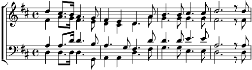

1. Joy to the world, the Lord is come, let earth recieve a king.
Let evry heart prepare him room
and heav'n and nature sing,
and heav'n and nature sing,
and heav'n and nature sing.
2. Joy to the world, the saviour reigns,
That men their songs employ.
White fields and floods, rocks, hills and plains repeat the sounding joy,
repeat the sounding joy,
the sounding, the sounding joy,
3. Comme 1.